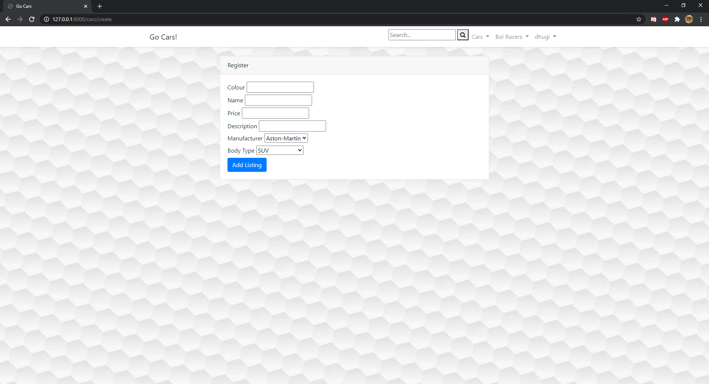
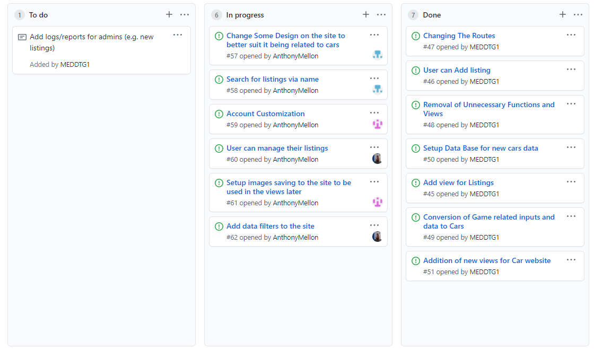

Sprint 5.
12/10/2020
8am – 10am
Group didnt show, ended up redesigning the form to add cars, Added two dropdowns filled by the database to pick the body type and manufacturer.

15/10/2020
8am – 10am
Anthony is the sprint leader, he gave us our tasks for the sprint while I started working out how to make it so that only the creator of the listing could edit it.
Added the userID to the listing so that later I can use that to edit it as that logged in user.

19/10/2020
8am – 10am
22/10/2020
8am – 10am
Overall individual sprint reflection
What did I do well? - only thing I did was recreate the forms and add a piece of code to grab the userID.
What could I do better? - Lost motivation during this Sprint, was away for the majority of it. I'm going to try alot harder next Sprint.
What did I learn? - how to get the UserID of the user that added an item.
What do I still need to learn? - I need to learn how to use the userID to make it so that only one person can edit a listing.
What the group achieved.
I added the field for userID to start making the edit the listing by the user. Updated forms. Personally was busy with family and work during the second week of the, couldnt find any time to work on the project.